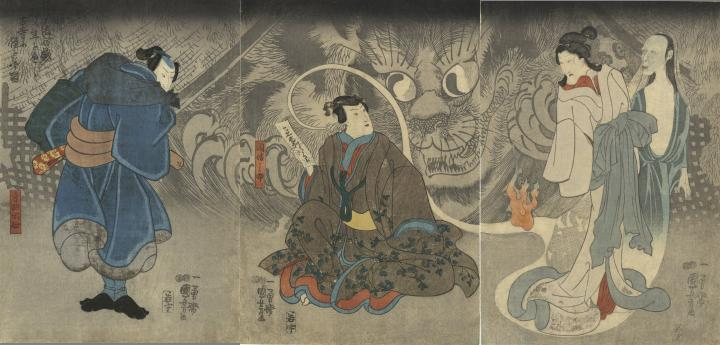

因幡之助と寺西閑心の前に巨大な猫又の影が現われている。
著作者：一勇齋國芳／出典：親書誌：U426_nichibunken_0388：昔ばなしの戯猫又年をへて古寺に怪をなす圖；ムカシバナシ ノ タワムレ ネコマタ トシ オ ヘテ コジ ニ カイ オ ナス ズ／日付：2015／資源識別子：U426_nichibunken_0388_0001_0000
Copyright (c)2010- International Research Center for Japanese Studies, Kyoto, Japan. All rights reserved.